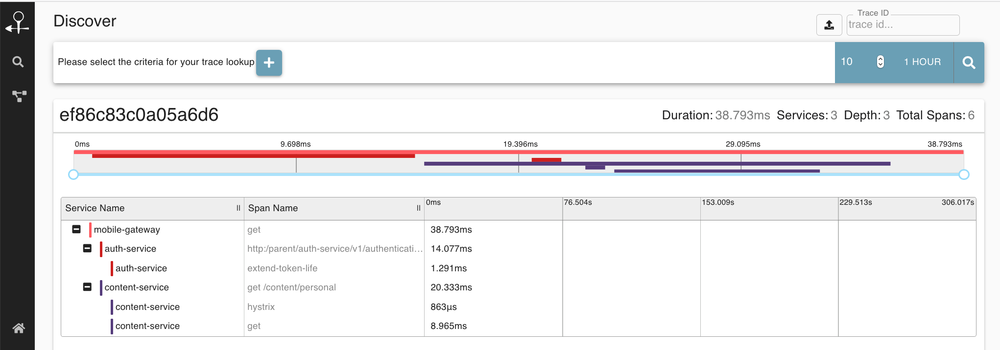

ALTEA
Patterns orientés cloud
UBER

Problématiques :
Comment gérer la configuration des services ?
Comment analyser l'enchaînement des appels ?
Comment connaître l'état de l'application ?
Patterns d'architecture
Configuration externalisée
Configuration externalisée
Permet d'exécuter un service dans multiples environnements sans modifications
- Accès BDD
- Gestion sécurité
Plusieurs stratégies
- Variables d'environnement
- Profiles : un fichier de configuration par profil
Configuration externalisée chez Spring
- command-line arguments
- OS env-vars
- application-{profile}.properties
- application.properties
Configuration externalisée chez Spring
serveur de configuration
- la configuration exposée par une API REST
- au démarrage, Spring effectue un appel REST pour charger sa configuration
- l'API REST stocke ses données dans GIT
Patterns d'architecture
Centralisation des logs et correlation
Centralisation des logs
Dans un environnement load-balancé, les requêtes d'un utilisateur peuvent être traitées par n'importe quel serveur.
Dans un environnement cloud, on ne peut pas forcément accéder aux machines pour consulter les fichiers de log.
Dans un environnement conteneurisé, on ne peut pas forcément accéder aux logs des containers (kubernetes...)
Centralisation des logs
On envoie tous les logs dans un service dédié
- un service lit les fichiers de log et envoie les lignes au serveur
- les logs sont indexés et conservés
- une IHM permet de les consulter
Centralisation des logs
Centralisation des logs
Produit connus :
Stack "ELK"
- Elasticsearch : indexation des logs, et recherche "full-text"
- Logstash : Parsing des fichiers de logs, et envoi à Elasticsearch
- Kibana : IHM de consultation d'Elasticsearch : recherche, dashboards...
Correlation des logs
Observer la séquencialité des appels
Observer les logs d'un même utilisateur
Trouver des points de contention
Aide au debugging
Correlation des logs
Correlation des appels via des Headers HTTP
Création d'un id pour chaque requête reçue
Transmission de l'id à chaque requête envoyée
Envoi des traces à un outil centralisé
Correlation des logs
Spring Cloud Sleuth permet de gérer ces correllation (il modifie les RestTemplate pour transmettre ces fameux headers).
Zipkin permet de collecter/consulter ce type d'information
Correlation des logs
Patterns d'architecture
Métriques
Métriques
Observer la santé des services
- healthcheck : est-ce que le service répond, est-ce que la BDD est bien connectée
- trace : récupérer les dernières requêtes HTTP traitées
- metrics : consommations mémoire / CPU
Métriques
Exposition des métriques dans une application spring-boot
Utilisation de spring-boot-actuator
Expose des métriques basiques de nos applications/api
Métriques
Collecte des métriques et exploitation
Comme pour les logs, les métriques peuvent être envoyées à un serveur dédié pour être consultées
Centralisation des métriques
Métriques
Même principe que pour les logs
Métriques
Produit connus :
Stack "Prometheus/Grafana"
- Prometheus : Concentration des métriques (BDD time/series)
- Grafana : Affichage sous forme de graphes, altering
Métriques
Agir en fonction des métriques
Pris en charge par les orchestrateurs de containers (kubernetes par exemple)
- healthcheck KO => redémarrer le service
- consommation mémoire / CPU élevée => déployer une instance supplémentaire du service (scale up)
TP